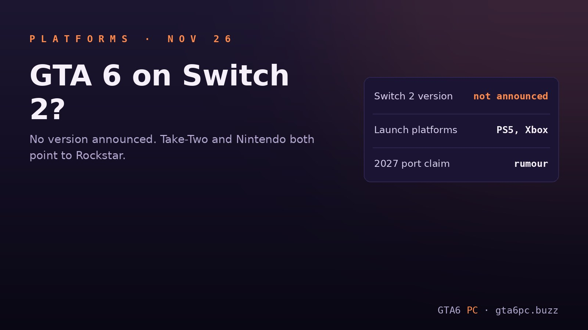

Is GTA 6 coming to Nintendo Switch 2?
GTA 6 is out on PlayStation 5 and Xbox Series X|S, and Switch 2 owners keep asking the same question PC players ask: is our platform next? The short answer is that nobody has announced a Switch 2 version, and nobody involved has ruled one out either. Take-Two's chief executive has said the company will support the Switch 2 and that platform choices are made case by case. Nintendo's president in America has said a GTA 6 port is a conversation for Take-Two and Rockstar. And a string of insider claims points to a possible 2027 port, none of which has been confirmed. Here is everything each side has actually said, and what would have to happen before a Switch 2 version becomes real.

The short answer
No, GTA 6 is not on Nintendo Switch 2, and no version has been announced. Rockstar's launch lineup has two platforms, PlayStation 5 and Xbox Series X|S, and that list has not changed since the game came out on November 19, 2026. The Switch 2 is the only current console without the game. That is the whole official story. Everything beyond it, port tests, insider claims, a possible later release, is rumour, and this article keeps the two apart. Our release date page tracks the same question for PC, where the position is identical: nothing announced.
What Take-Two has said
The strongest pro-Switch comments come from Take-Two CEO Strauss Zelnick, and they are about the platform in general, not about GTA 6. In February 2025, months before the Switch 2 launched, Zelnick told investors that Take-Two would support the Switch 2 and expected other publishers to do the same. That comment was widely reported as a hint about GTA 6, but he did not name the game. By May 2025, his wording had cooled. Asked about Switch 2 support, he said Take-Two looks at platforms case by case, would not necessarily bring every title to every platform, and pointed to catalogue opportunities on Nintendo hardware.
The most recent word came on November 9, 2026, ten days before launch, when Zelnick was asked by investors about PC and Switch 2 versions. His answer was that any information about new versions will always come from Take-Two's labels, which for GTA means Rockstar. In other words, Take-Two will not announce a Switch 2 version, and neither will Nintendo. If it ever happens, Rockstar will say so first. That is consistent with how Rockstar has handled every platform question for this game.
What Nintendo has said
Nintendo of America president Devon Pritchard was asked about GTA 6 on Switch 2 in an October 2026 interview with Variety. Her answer was careful: a port is, in her words, a conversation for Take-Two and Rockstar, and there was nothing to announce from Nintendo's side at that time. She added that Nintendo is just at the beginning of seeing what the Switch 2 can do, which some outlets read as a hint that the hardware could run the game. She did not say it would. Nintendo is not blocking a port, Rockstar is not announcing one, and that is where the official story ends.
The business case for Nintendo is easy to see. Nintendo's own figures put the Switch 2 at 23.68 million units shipped as of June 30, 2026, and the company kept its forecast of 16.5 million more consoles for the fiscal year ending March 2027. That is a large audience for any publisher. But audience size alone does not decide a port. The game would need serious scaling work, and Rockstar has not shown any sign of doing it.
The rumours: tests, subcontractors and a 2027 claim
None of the claims below came from Rockstar, Take-Two or Nintendo, and so far none has turned into an announcement. In November 2025, the insider NateTheHate said Rockstar had carried out tests on Switch 2 development hardware. During 2026, another insider, Nash Weedle, claimed a subcontractor was working on a port aimed at 2027, and that the version will not arrive in 2026. In late June 2026, leaker Nick Baker claimed Nintendo is working with Rockstar and Take-Two to try to make a port happen, landing in 2027 or later. In October 2026, Double Eleven, the studio that ported Red Dead Redemption to Switch, posted a job listing where Nintendo Switch and Switch 2 experience is a plus. That listing is a fact, but it has no established link to GTA 6.
One more voice is worth noting because it cuts the other way. In late September 2026, former Rockstar developer Jeremy Hartvick questioned whether a Switch 2 version makes sense for GTA's audience. He left Rockstar in 2020, so this is opinion, not inside information, but it is a reminder that a port is a commercial decision, not a technical inevitability. Taken together, the rumours point in the same direction, a possible 2027 port, but they are all unverified, and none of them names a date with anything behind it.
Could the Switch 2 run it?
The honest answer is that nobody outside Rockstar knows, because nobody has shown a Switch 2 build. The comparison that gets quoted most is the Xbox Series S, where GTA 6 runs at about 720p and upscales to around 1080p with FSR, with fewer details than the other consoles and frame rates in the mid to high 20s. If the game can be scaled that far down, a Switch 2 version is conceivable in principle. But conceivable is not the same as planned, and the Series S version still targets hardware well above a handheld in sustained performance.
Rockstar does have recent form on Nintendo hardware. The original Red Dead Redemption arrived on Switch 2 on December 2, 2025, with 60fps, HDR and DLSS support, according to Rockstar's announcement. That proves Rockstar can ship a polished game on the console. It does not prove GTA 6 is coming, because Red Dead Redemption is a 2010 game and GTA 6 is the most demanding open world Rockstar has ever built. Our PS4 and Xbox One guide makes the same point for the last generation: an older Rockstar game running on a platform says nothing about the new one.
What would have to happen next
A Switch 2 version can only arrive as a later announcement, and the order of events is fixed. Rockstar would announce it, Take-Two would confirm the timing on an earnings call, and Nintendo would list it in a Direct or on its store. Until the first of those happens, there is no date, no pre-order and no download. Any site or video offering a GTA 6 Switch 2 download today is fake, in the same way every GTA 6 PC download today is fake. The pattern to watch is the PC one: a report from a named outlet with named sources, then a Rockstar statement. The GamesBeat report of a PC version in early 2027 followed that pattern and is still unconfirmed a month later, which shows how long the gap between a report and an announcement can be.
For Switch 2 owners, the practical advice is simple. If you want to play GTA 6 now, you need a PS5 or an Xbox Series X|S, or a PC and our Remote Play guide to stream from a console you own. If you are waiting for a Switch 2 version, watch Rockstar's channels and Take-Two's earnings calls, not insider posts. We will update this page the day anything is announced.
Quick answers
Is GTA 6 on Nintendo Switch 2?
No. GTA 6 launched on November 19, 2026 for PlayStation 5 and Xbox Series X|S only, and no Switch 2 version has been announced by Rockstar, Take-Two or Nintendo.
Has Take-Two ruled out a Switch 2 version?
No. CEO Strauss Zelnick said in February 2025 that Take-Two would support the Switch 2, in May 2025 that titles are chosen case by case and not every game goes to every platform, and on November 9, 2026 that news of new versions always comes from Rockstar. None of that is a GTA 6 promise.
What did Nintendo say about GTA 6 on Switch 2?
Nintendo of America president Devon Pritchard told Variety in October 2026 that a port is a conversation for Take-Two and Rockstar, and that Nintendo had nothing to announce. She added that Nintendo is just at the beginning of seeing what the Switch 2 can do.
Is there a rumoured Switch 2 release date?
Insiders have claimed Rockstar tested the game on Switch 2 development hardware in November 2025, and that a subcontractor is working on a port aimed at 2027. Both claims are unconfirmed, and no date can be trusted until Rockstar announces one.
Could the Switch 2 hardware run GTA 6?
Unknown. The game runs on Xbox Series S at about 720p, so a scaled version is conceivable, but Rockstar has shown no Switch 2 build and no port has been confirmed. Red Dead Redemption runs on Switch 2 at 60fps with DLSS, which shows Rockstar can ship on the hardware, but that is a different and much older game.
Last updated . We update this page when Rockstar announces anything new.